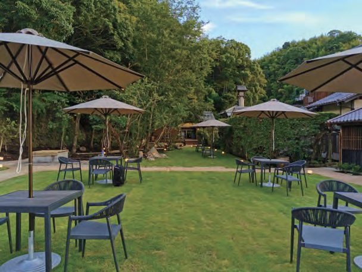
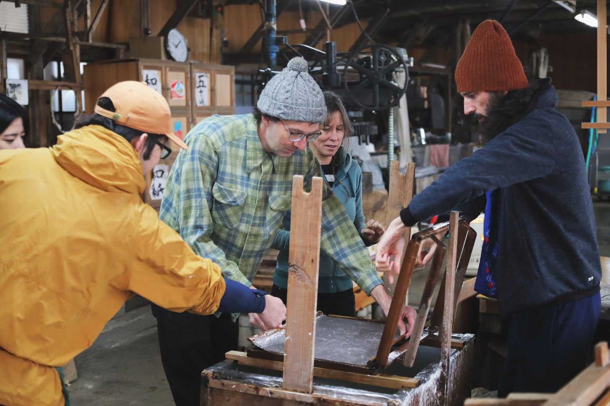
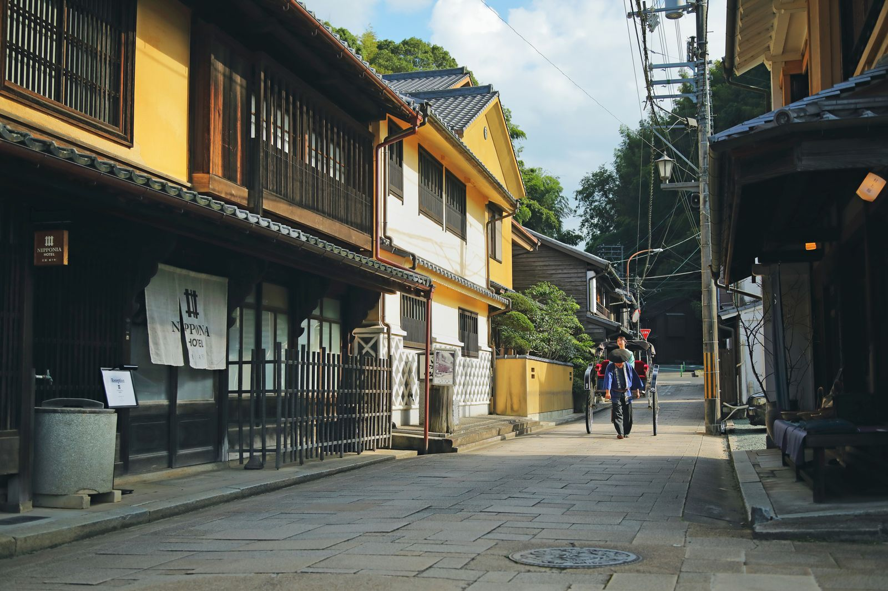
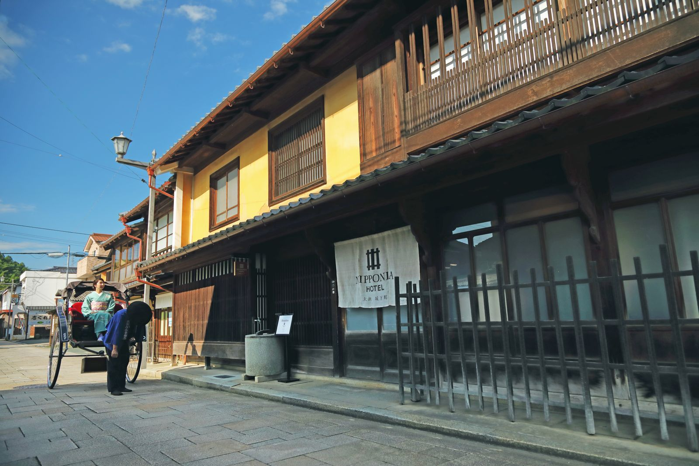
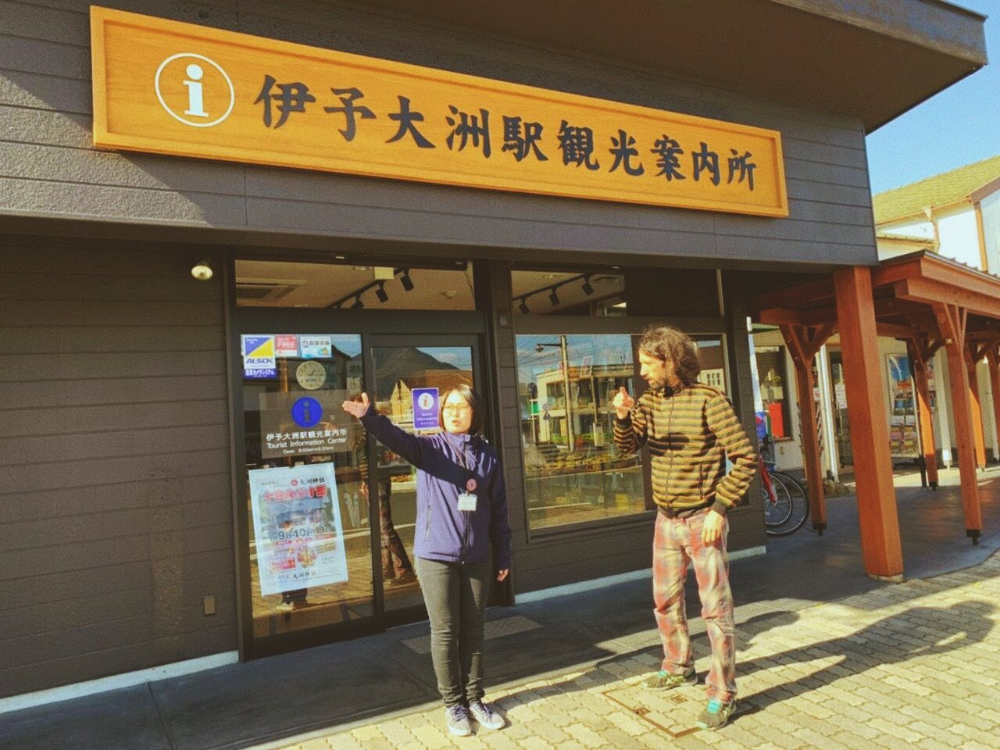
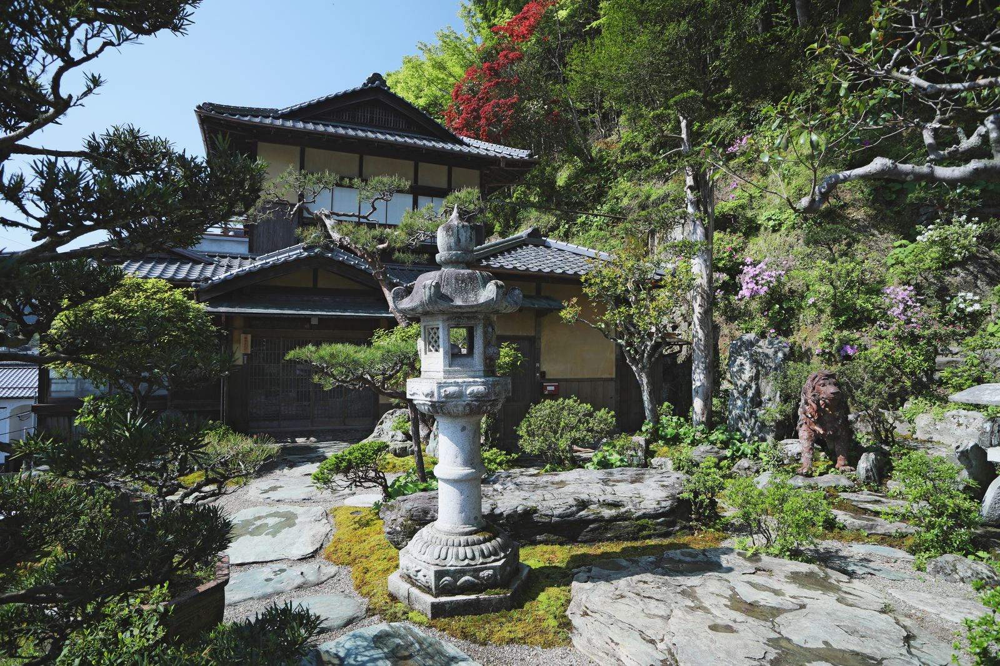
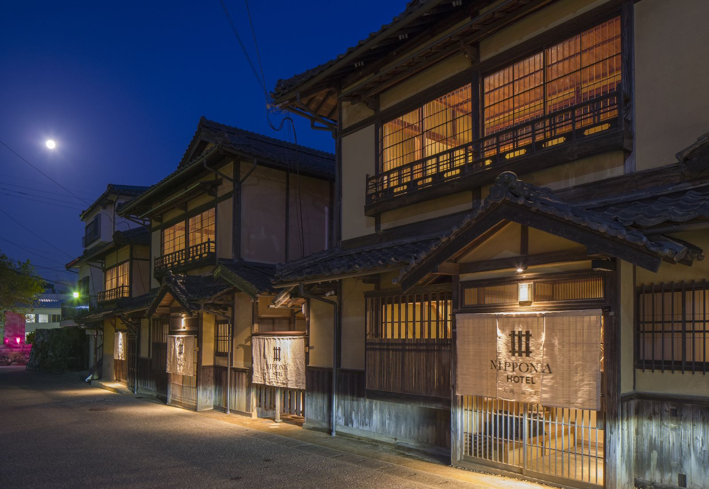
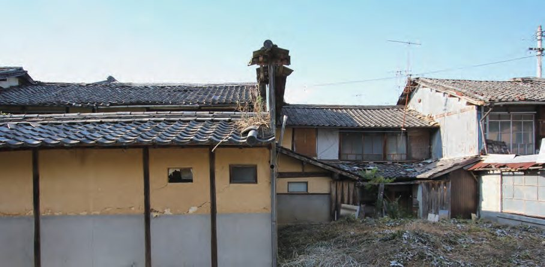

2023年1・2月｜研修
日本政府観光局（JNTO）の若手職員研修
入って2〜3年目の職員を、3日間×2班で受け入れました。初日に一人ひとりが目標を宣言し、講義のたびにグループで振り返り、2日目の講義は英語で、3日目は地域の事業者との交流と最終発表。
実施報告書（PDF）↗
仕事や学びで関われる？
大洲で働く・組む・学ぶ。入口を選んでください。
仕事
学び

視察・研修・インターン・学校の授業で、大洲の城下町は学びに来る人を受け入れてきました。
出典：キタ・マネジメント「視察概要」（2026年6月版）・令和6年度／令和7年度 実績報告

2023年1・2月｜研修
入って2〜3年目の職員を、3日間×2班で受け入れました。初日に一人ひとりが目標を宣言し、講義のたびにグループで振り返り、2日目の講義は英語で、3日目は地域の事業者との交流と最終発表。
実施報告書（PDF）↗

2024年度｜インターン
応募9名から3名（東京女子大学・東洋大学・和歌山大学大学院）を受け入れ、臥龍山荘と伊予大洲駅の観光案内所で海外からのお客さまに163件のアンケートをとり、それをもとにPRの戦略を立てました。2025年度の夏も3名が7月末から9月末まで滞在し、成果報告会で発表しています。

2025年春｜インターン
盤泉荘の前にある空き家「河野邸」をいっしょに掃除し、活用を考えるワークショップをしました。このまちの再生が、空き家の掃除から始まったことを体で知る時間です。

これまでに視察・研修で来た団体の一部です。
大洲の事業者やプロジェクトで働きたい方の窓口です。本業でも、副業・短期でもかまいません。いま決まった募集がなくても、内容を見て合いそうな仕事があればご連絡します。仕事の募集は、このLINEの配信でもお知らせします。
仕事の相談を送る働き方・できることを書いて送る写真・文章・翻訳・デザイン・Web・企画など。フォームの内容をもとに、まちの事業ごとの担当が受け入れを考えてご連絡します。専門性のあるお願いには、謝礼をつけることがあります。
まず気軽に手伝いたい方は「関わり方ガイド」へ →共同事業・実証・出資・調達・専門の協力など。どの形でも、最初はフォームから事務局（一般社団法人キタ・マネジメント）にご連絡ください。以後のやり取りは、メールなどで個別に行います。
関わるか決める前に、まず視察で見る ↓お問い合わせ種別は「OZU 555 PROJECT」を選び、団体・組織名の欄には「個人」とお書きください。内容の欄に、次の3つがあると話が早く進みます。
お問い合わせ種別は「OZU 555 PROJECT」を選んでください。内容の欄に、次の4つがあると話が早く進みます。
営業のご提案（ツール・広告・制作などの売り込み）は、このフォームではお受けしていません。

城下町を歩いて再生の前と後を見比べ、座学で仕組みを聞き、実際に手がけた人と意見を交わします。1グループ原則10名まで。
| コース | 時間 | 5名まで | 6人目から |
|---|---|---|---|
| 日帰り | 4時間 | 100,000円 | +15,000円 |
| 1泊2日（NIPPONIA泊つき） | 8時間 | 200,000円 | +30,000円 |
| 1泊2日（宿の手配なし） | 8時間 | 145,000円 | +19,000円 |
| 2泊3日（宿泊つき） | 15時間 | 340,000円 | +54,000円 |
| 2泊3日（宿の手配なし） | 15時間 | 230,000円 | +32,000円 |
「6人目から」は1人ごとの追加料金です。研修資料の印刷は別料金です。最新の料金はキタ・マネジメントの視察ページでご確認ください。
12:30 まちの駅あさもや集合 → オリエンテーション → 座学 → 城下町を歩く（再生前の古民家・ホテルのフロントと客室・ショップ）→ 座学 → 質疑と意見交換 → NIPPONIA HOTEL に泊まる（夜は地元の食材の夕食・鵜飼・大洲城のナイトツアーを選べます）
臥龍山荘または大洲城 → 座学 → 質疑 → 12:30 解散
講師は、代表理事の髙岡公三（元・伊予銀行）、企画広報の井上陽祐、インバウンド担当の謝璠ほか。ご希望に合わせて顔ぶれを組みます。

改修前の空き家。視察では、再生の前と後を両方見ます
2025年度・28件に291名、2024年度・23件に172名。2025年度はそのうち61名が NIPPONIA HOTEL に泊まりました。
出典：キタ・マネジメント 令和6年度・令和7年度 実績報告、お知らせ（2024年2月）
再生の現場を案内人と歩くツアー「OZU STORIES」は2025年度に52件。案内人の養成講座も毎年開いています。学びに来た人を迎えるのも、学び続けている人たちです。
理論と強いリーダーシップの両方がそろった事例。交流人口を増やすには、その地域に合った目的をはっきりさせることが大事だと分かった。
ある市の観光協会の職員（視察の感想の要旨）立場の違う何人もの人から話を聞けたので、気づきが多かった。
ある市の職員（視察の感想の要旨）大洲が決めたこと、やったこと、つまずいたことは「まちづくりデータ」のページで公開しています。個別のご相談は、まず視察にお越しいただき、現地でお話ししています。
視察より長く、参加者の「宣言」から始めて最終発表で終わる形に組み立てます。研修のゴールは、依頼する側の人事部門と一緒に決めます。
『現場』を感じることができたのが良かったです
研修の参加者（キタ・マネジメントの研修ページより）日本政府観光局（JNTO）の研修では、人事部と話し合い、研修のゴールを「地方の知識と海外の知見を併せ持つ職員」に置いています。終わりに求めたのは、職場に戻ってからの行動の変化です。
城下町に住み込み、キタ・マネジメントの仕事を事務の基本から経験します。視察に同行して事業の全体をつかみ、最後に自分の成果（観光客アンケートの分析など）を発表します。
全体 176時間・学ぶ時間 45時間・実務 124時間
2025年度の要項より。大学で単位になる場合は、書類づくりに協力します。 出典：キタ・マネジメント 2025年度 長期インターンシップ募集要項
| 住まい | 城下町のシェアハウス「TAMON」を貸与（水道光熱費込み） |
|---|---|
| 報酬 | 月5万円（最低賃金での雇用契約から寮費を差し引いた手取り。労災保険つき・2025年度の要項） |
| 貸与 | 家具・家電・自転車・PC |
| 時期 | 7〜9月（2025年度の例） |
| 選考 | オンライン面談 |
学校では決して学べない観光やまちづくりの現場
東洋大学のインターン生（体験談より）何よりも素晴らしい人々と出会うことができました
和歌山大学大学院のインターン生（体験談より）大洲に来て本当に良かったです。
東京女子大学のインターン生（体験談より）2025年度の募集は終わっています。2026年度の募集は、決まり次第キタ・マネジメントの採用ページでお知らせします。
まち全体を教室に、城下町の空き家の調査から活用のアイデアづくり、成果の発表まで。授業の回数に合わせて組み立てます。
| 学校 | 取り組んだこと | 人数 |
|---|---|---|
| 大洲高校 普通科1年 | 食品ロスとモビリティを調べ、シンポジウムで発表 | 16名 |
| 大洲高校 商業科3年 | 工芸とアートの催しで、作品と作家を紹介するコンテンツをつくる | 27名 |
| 大洲南中学校 1年 | 古民家を現地で調べ、空き家の活用のアイデアを発表 | 69名 |
| 新谷中学校 3年 | 大洲藩加藤家の末裔の空き家の活用法を考える | 35名 |
| 長浜小学校 3年 | 長浜の魅力を見つけ直し、小学生の目線でPRを考える | 27名 |
| 大洲小学校 3年 | 大洲の取り組みと台湾の事例を知る | 39名 |
| 宇和島南中等教育学校・大洲農業高校（有志） | 大洲城の見学・町並みの散策 | 20名 |
成果は2025年12月の「持続可能なまちづくりシンポジウム」で、高校生が自分たちで発表しました。来場は約100名、満足度は97.9%でした。
2024年度は4校・32回、235名でした。高校生は2023年12月・2025年1月・2025年12月のシンポジウムで、自分たちで発表しています。2024年度は大洲高校商業科3年が、まちのイベントに店を出しました。
出典：キタ・マネジメント 令和6年度・令和7年度 実績報告
一般社団法人キタ・マネジメント 事業課
出どころ：キタ・マネジメントの公開ページと公開資料（視察概要・視察コースと研修のページ・インターンの募集ページと要項・令和6年度／令和7年度 実績報告・お知らせ）。団体名は同社が公開しているもので、ロゴは使っていません。視察と研修の感想、インターンの体験談も、同社が公開しているものから引いています。このページの内容は10月27日に確認。
写真：大洲まちづくりブック・キタ・マネジメント提供・OZU 555 PROJECT 写真共有フォルダ